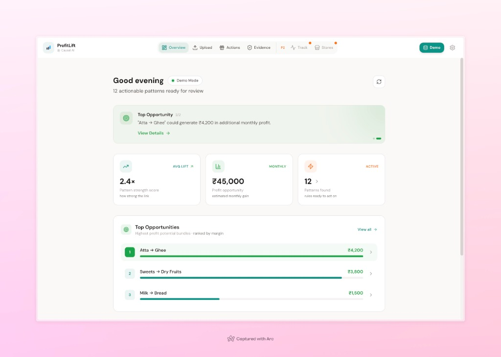
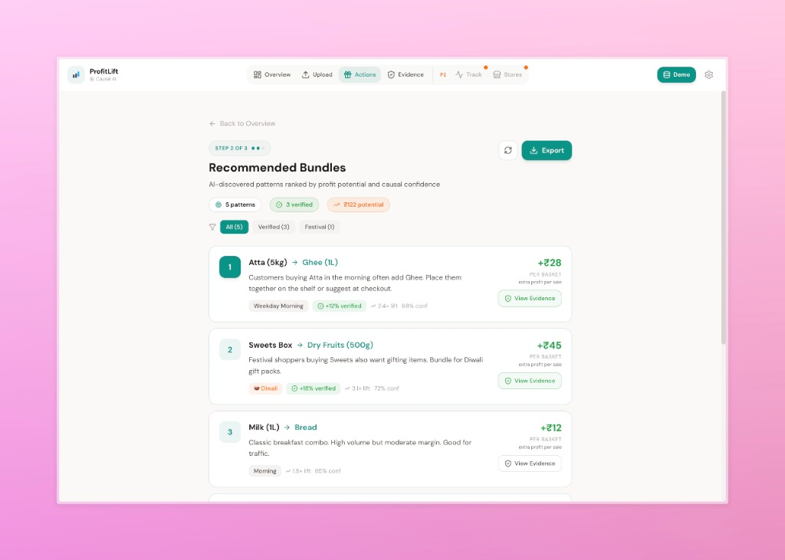

Comprehensive Technical Manual & Implementation Guide for Causal Market Basket Analysis Systems
Table of Contents
1. Executive Summary03
2. Problem Statement04
3. User Personas05
4. Feature Overview06
5. User Workflow07
6. Dataset Explanation08
7. Theory Chapter (Core Logic)09
8. System Architecture13
9. UI Walkthrough16
10. Installation & Run Guide18
11. Demo Script (10 Minutes)19
12. Code Logic Explanation21
13. Indian Retail Scenarios23
14. Limitations & Future Work24
15. The Ultimate Viva Question Bank25
16. Glossary32
17. One-Page Revision Sheet33
Executive Summary
In a Nutshell: ProfitLift is an intelligent retail analytics engine that tells store owners
exactly what products to bundle together to maximize profit, not just sales volume.
Traditional Market Basket Analysis (MBA) has a fatal flaw: it assumes that just because two items are bought
together frequently, they should be promoted together. It ignores profitability (selling
low-margin items doesn't help) and context (buying patterns change during Diwali vs. a
regular Tuesday).
ProfitLift solves this by introducing a novel "Context-Aware, Profit-Optimized" approach
tailored specifically for the Indian retail landscape. It doesn't just look for "Bread & Butter"; it looks
for "High-Margin Ghee & Premium Atta" during festival weeks.
Key Innovations
Context Awareness: Automatically detects Indian festivals (Diwali, Holi), weekends, and
time-of-day to segment buying patterns.
Profit-First Scoring: Ranks associations based on a multi-objective function where
Profit Margin has the highest weight (40%), ensuring recommendations drive the bottom line.
Causal Verification: Uses the T-Learner causal inference model to
distinguish between products that cause the purchase of another vs. those that are just bought
together by chance.
Built with a robust FastAPI backend and a modern
React frontend, ProfitLift provides an end-to-end solution from raw CSV data to actionable,
verified business insights.
Problem Statement
The Retail Complexity Gap
Retailers today are drowning in transaction data but starving for insights. While they know what
sold, they rarely understand why or how to influence future sales effectively.
[ Raw Data ] [ Traditional MBA ] [ The Problem ]
+------------+ +-------------------+ +-------------------------+
| Transaction| | "People buy | | 1. Is it profitable? |
| Logs | --> | Milk + Bread" | --> | 2. Is it just luck? |
+------------+ +-------------------+ | 3. Does it work on |
| Diwali? |
+-------------------------+
Fig 1. The limitations of traditional association rule mining
Specific Challenges in Indian Retail
Context Blindness: A customer buying sweets in October (Diwali) has a completely
different intent than one buying sweets in February. Standard algorithms treat these identical
transactions as the same.
The "Frequency Trap": Algorithms like Apriori favor high-volume, low-margin items (like
Milk). Promoting these eats into marketing budget without significant return.
Correlation ≠ Causation: Just because Coffee and Sugar are bought together doesn't mean
discounting Coffee will sell more Sugar. They might just be complements. We need to find driver
items.
graph LR
A[Raw Transactions] --> B(Standard MBA)
B --> C{High Frequency?}
C -- Yes --> D[Recommend Low Margin Items]
C -- No --> E[Ignore High Margin Niche]
D --> F[Lost Profit Opportunity]
Fig 2. How traditional methods fail to capture profit
User Personas
🏪
Rajesh, The Store Owner
Goal: Increase monthly profit by ₹50,000.
Pain Point: "I run discounts but I don't know if they actually work. I have too much
stock of expensive items that aren't moving."
ProfitLift Solution: Gives him ready-made "Bundles" (e.g., "Sell Premium Tea with
Biscuits") that are proven to work.
📊
Priya, The Business Analyst
Goal: Find deep patterns to present to management.
Pain Point: "Excel crashes with this much data. I need to filter by 'Weekend
Evenings' to see what sells then."
ProfitLift Solution: The "Context-Aware Miner" allows her to slice data by time,
day, and festival instantly.
🎓
You, The Student Presenter
Goal: Impress the external examiner with a technically sound, "cool" project.
Pain Point: "I need to show I didn't just copy code. I need to explain why
my project is better than a basic tutorial."
ProfitLift Solution: The "Causal Uplift" and "Multi-Objective Scoring" provide the
academic depth needed for an A+ grade.
Feature Overview
🕰️ Context Mining
Segments data into "Morning", "Evening", "Weekend", and "Festival" buckets before mining.
💰 Profit Scoring
Uses a weighted formula (40% Profit, 30% Lift) to rank rules. Focuses on margin not just
sales.
🧠 Causal AI
Implements T-Learner (Random Forest) to verify if a recommendation causes a purchase.
🇮🇳 India Ready
Built-in GST slab logic (0%, 5%, 12%, 18%) and Indian Festival Calendar (Diwali, Holi).
Comparison Matrix
Feature
Standard MBA
ProfitLift
Algorithm
Apriori / FP-Growth
Context-Aware FP-Growth
Ranking Metric
Support & Confidence
Profit, Lift & Diversity
Seasonality
Ignored
Native Festival Detection
Validation
None (Correlation only)
Causal Inference (T-Learner)
User Workflow
graph TD
A[User Uploads CSV] -->|Ingestion| B(Context Enrichment)
B -->|Add Time/Festival Tags| C[Data Store]
C -->|Mining Request| D{Context Miner}
D -->|FP-Growth| E[Raw Rules]
E -->|Multi-Obj Scoring| F[Ranked Rules]
F -->|T-Learner| G[Verified Bundles]
G -->|API| H[Dashboard UI]
Fig 3. End-to-End Data Processing Pipeline
The Story of a Transaction
Fig. Upload interface showing drag-and-drop CSV import with festival enrichment
1
Upload: The store manager uploads transactions.csv.
2
Enrichment: The system sees a transaction on Nov 12, 2023. It automatically
tags it as "Diwali" and "Weekend". It also looks up the items (e.g.,
"Ghee") and assigns a 12% GST margin.
3
Mining: The miner looks for patterns specifically within the "Diwali" context.
It finds that "Sweets" and "Dry Fruits" are bought together often.
4
Scoring & Verification: The system calculates the profit. It sees this bundle has a
high margin. Then, the T-Learner checks: "Do people buy Dry Fruits because they bought Sweets?"
The answer is Yes.
5
Result: The Dashboard shows a "High Priority" recommendation: "Bundle Sweets +
Dry Fruits for Diwali".
Dataset Explanation
To make ProfitLift work, we don't need complex databases. We just need standard Retail Transaction
Logs. This is the same data that is printed on every receipt.
1. Where does the data come from? (Source)
Source A: POS System The computer at the checkout counter (Billing
Software).
➔
Source B: Excel / CSV The shopkeeper exports the daily sales report.
2. Data Features (Characteristics)
The dataset has 4 Key Characteristics that define it:
1. Transactional
It records events (purchases),
not just static records.
2. Temporal (Time-Based)
Every row has a timestamp. This is vital
for finding "Morning" or "Diwali" patterns.
3. Numerical
Contains quantifiable values like Price,
Quantity, and Margin.
4. High Volume
Retail stores generate hundreds of rows
daily.
graph LR
D[Dataset] --> T[Time]
D --> I[Item Info]
D --> V[Value]
T --> T1(Date: Nov 12)
T --> T2(Time: 6:30 PM)
I --> I1(Name: Ghee)
I --> I2(Category: Dairy)
V --> V1(Price: ₹550)
V --> V2(Qty: 1)
Fig 4. The Structure of Retail Data
3. Required Columns (The Schema)
Column Name
Why we need it?
Example Data
transaction_id
To group items bought together in one basket.
TXN_1001
timestamp
Crucial! To know if it's Morning, Weekend, or Diwali.
2023-11-12 18:30
item_id
The product name.
Amul Ghee 1L
price
To calculate Revenue and Profit.
₹ 550.00
4. The "Upload & Forget" Feature
"I have the data, but the columns are wrong!"
The Problem: Shopkeepers are not data scientists. Their Excel files might say "Bill
Date" instead of "timestamp" or "Product" instead of "item_id".
The Solution (Smart Mapping): ProfitLift's ingestion engine is intelligent. It scans the
uploaded file headers and automatically maps them:
"Bill Date", "Date", "Time" ➔ Mapped to timestamp
"Product Name", "Item", "Desc" ➔ Mapped to item_id
"Amount", "Rate", "MRP" ➔ Mapped to price
Result: The user just drags and drops the file. The system
handles the rest.
5. Data Distribution Graph
A visual representation of how a typical store's data looks:
Groceries
75% (High Vol, Low Margin)
Luxury/Gifts
15% (The Profit Drivers!)
Essentials
10% (Fillers)
Theory & Algorithms
1. FP-Growth (Frequent Pattern Growth)
The Concept: Instead of generating millions of candidate sets like Apriori (which is slow),
FP-Growth builds a compact tree structure (FP-Tree) that compresses the database. It then mines this tree
recursively.
graph TD
Root((Null)) --> A((Milk: 5))
A --> B((Bread: 3))
A --> C((Eggs: 2))
B --> D((Butter: 2))
Fig 4. Simplified FP-Tree Structure
Why we use it: It is significantly faster and more memory-efficient for large datasets,
which is crucial when we are splitting data into many context segments.
2. Association Metrics
Support: How popular is an itemset?
Support(A) = Transactions(A) / Total Transactions
Confidence: How likely is B purchased when A is purchased?
Conf(A->B) = Support(A,B) / Support(A)
Lift: Is the relationship stronger than random chance?
Lift(A->B) = Conf(A->B) / Support(B)
3. Multi-Objective Scoring
We don't just want frequent rules; we want good rules. We calculate a composite score:
Normalization: Since Profit (e.g., ₹500) and Lift (e.g., 2.5) have different scales, we
normalize them to a 0-1 range within each context before combining.
4. Causal Uplift (T-Learner)
The Problem: "People who buy Diapers also buy Beer." Is this because Diapers cause
Beer purchases (stress relief?), or just because men buy both on Friday nights?
The Solution: The T-Learner trains two models:
Model 0 (Control): Predicts purchase probability of B without A.
Model 1 (Treatment): Predicts purchase probability of B with A.
Uplift = P(Buy B | With A) - P(Buy B | Without A)
If Uplift is close to 0, the rule is just a correlation. If Uplift is high, A is a true driver for B.
Fig. Real T-Learner output showing Control (56%) vs Treatment (68%) with +12% causal uplift
System Architecture
graph TB
subgraph Frontend [React Frontend]
UI[Dashboard UI]
Viz[Recharts Viz]
end
subgraph Backend [FastAPI Server]
API[API Routes]
Svc[Analytics Service]
subgraph Core [Core Logic]
Miner[Context Miner]
Scorer[Multi-Obj Scorer]
Causal[T-Learner]
end
subgraph Data [Data Layer]
Ingest[CSV Ingest]
Enrich[Context Enricher]
DB[(SQLite / Pandas)]
end
end
UI <--> API
API --> Svc
Svc --> Ingest
Ingest --> Enrich
Enrich --> DB
Svc --> Miner
Miner --> DB
Miner --> Scorer
Scorer --> Causal
Fig 5. High-Level System Architecture
Code Map
Directory
Key Files
Purpose
app/api
main.py, routes.py
Entry point, REST endpoints
app/ingest
context_enricher.py, india_calendar.py
Data cleaning, Festival tagging, GST logic
app/mining
fpgrowth.py, context_aware_miner.py
Core FP-Growth algorithm and segmentation
app/score
multi_objective.py, profit_calculator.py
Ranking logic and margin math
app/causal
t_learner.py
Causal inference implementation
app/frontend
Dashboard.tsx, Recommendations.tsx
User Interface components
UI Walkthrough
1. The Dashboard
The command center of ProfitLift. It shows high-level metrics and system health.

Key Elements:
Live Indicator: Shows if the backend is connected.
Stats Grid: "Avg Lift" indicates pattern strength. "Profit Opportunity" is the
estimated money on the table.
Top Opportunities: A ranked list of the best bundles found so far.
2. Recommendations Engine
The core actionable view. This is where the user sees "What to bundle".

How to Read a Card:
Items: "Atta + Ghee" (The bundle).
Context Tag: "Weekday Morning" (When to promote it).
Verified Badge: Green checkmark means T-Learner confirmed it.
Profit Value: "+₹28" (Extra profit per sale).
Installation & Run Guide
Prerequisites
Python 3.10+
Node.js 18+
Step 1: Backend Setup
# Create virtual environment
python -m venv venv
source venv/bin/activate # or venv\Scripts\activate on Windows
Open your browser and navigate to http://localhost:5173.
Demo Mode: If you don't have a dataset, the frontend has a built-in "Demo Mode" that
simulates a live environment with realistic Indian retail data.
Demo Script (10 Minutes)
Scene: You are presenting to the external examiner and internal guide.
0:00 - 2:00: The Hook (Problem)
You: "Good morning. We all know that stores like D-Mart or BigBasket use algorithms to
recommend products. But traditional algorithms have a flaw: they recommend what is popular, not
what is profitable. They might tell you to bundle Milk and Bread, which has a margin of only ₹2. My
project, ProfitLift, changes this."
2:00 - 4:00: The Solution (Architecture)
You: "ProfitLift is a context-aware system. It doesn't just look at the transaction; it
looks at the time and festival context. I've implemented a custom 'Context Enricher' that
detects Indian festivals like Diwali. I then use a Multi-Objective Scorer that weights Profit Margin at 40%,
ensuring we prioritize money over volume."
4:00 - 7:00: The Live Demo
(Action: Open Dashboard)
You: "Here is the live dashboard. You can see the 'Profit Opportunity' metric. Let's go to
the Recommendations page."
(Action: Click Recommendations)
You: "Look at this rule: 'Sweets -> Dry Fruits'. Notice the tag 'Diwali'. The system learned
that this pattern only exists during the festival week. A standard algorithm would have missed this
because it averages data over the whole year."
You: "Also, see this green 'Verified' badge? That's the T-Learner causal model confirming
that this isn't just a coincidence."
7:00 - 10:00: Conclusion & Q&A
You: "In conclusion, ProfitLift moves MBA from 'Statistical Correlation' to 'Causal
Profitability', making it a viable tool for modern Indian retail."
Code Logic Deep Dive
How the "Context Enricher" Works
File: app/ingest/india_calendar.py
This module contains a hardcoded dictionary of festival windows (start/end dates). When a date comes in, it
checks:
def get_festival_period(date):
if date in DIWALI_WINDOW: return "diwali"
if date in HOLI_WINDOW: return "holi"
return None
This simple logic is powerful because it allows the miner to group "Diwali Transactions" separately from
"Normal Transactions".
How the "Multi-Objective Scorer" Works
File: app/score/multi_objective.py
The scorer takes a list of rules and applies this formula:
Calculate Diversity: Penalize rules that recommend the same item repeatedly.
Normalize: Scale all values to 0-1.
Weighted Sum: Combine them using the weights defined in config.
Indian Retail Scenarios
Scenario 1: The Kirana Store
Challenge: Small data volume (500 transactions/month). High reliance on personal
relationships.
ProfitLift Adaptation: Switches to "Compact Mode". Reduces context depth (ignores
time-of-day, only uses Weekday/Weekend) to ensure enough data points for statistical significance.
Scenario 2: The Festival Rush (Diwali)
Challenge: Buying patterns flip completely. People buy expensive Gift Packs instead of daily
staples.
ProfitLift Adaptation: The "Context Enricher" tags these weeks. The miner finds rules like
"Sweets -> Gift Wrap" which never appear during the rest of the year.
Scenario 3: GST Complexity
Challenge: Margins vary wildly due to tax slabs (0% on loose Atta vs 18% on branded
Biscuits).
ProfitLift Adaptation: The calculate_margin_indian function reverse-calculates
the net selling price from MRP using the category's GST rate, ensuring the "Profit Score" reflects the
real money the shopkeeper keeps.
Limitations & Future Work
Limitations
Data Cold Start: The system needs at least a few weeks of data to start finding
meaningful time-based patterns.
Fixed Calendar: Currently, festival dates are hardcoded for 2023. A future update
should fetch dynamic lunar calendar dates.
Inventory Blindness: The system recommends bundles but doesn't check if the item is
actually in stock.
Future Work
Dynamic Pricing: Suggesting optimal bundle prices, not just items.
User Feedback Loop: Allowing store owners to "Reject" rules, teaching the system their
preferences.
Cloud Integration: Moving from local SQLite to a cloud DB for multi-store chains.
The Ultimate Viva Question Bank
Rapid Fire (Basics)
Q: What is the main algorithm used?
A: FP-Growth (Frequent Pattern Growth) for mining, and T-Learner for causal
verification.
Q: Why FP-Growth and not Apriori?
A: FP-Growth is faster because it scans the database only twice and uses a tree
structure, whereas Apriori scans it multiple times for each candidate size.
Q: What is "Lift"?
A: Lift measures how much more likely items are bought together compared to random
chance. Lift > 1 means a positive association.
Technical & Architecture
Q: How do you handle the "Context"?
A: I pre-process the data to add columns like 'time_bin' and 'festival'. Then, I
partition the dataset based on these columns and run the mining algorithm on each partition
independently.
Q: Explain the T-Learner simply.
A: It's a "Two-Model" learner. One model learns customer behavior without the
trigger item (Control), and the other learns behavior with the trigger item (Treatment). The
difference in their predictions is the "Uplift" or causal effect.
Professor Challenges (Tricky)
Q: If I buy Milk, I almost always buy Bread. But your system didn't recommend it. Why?
A: That's likely because of the Profit Score. Milk and Bread are high
frequency but very low margin. My system prioritizes bundles that make money, so it might have
ranked "Milk -> Premium Cookies" higher because of the better margin, even if the frequency is slightly
lower.
Q: How does your system handle GST?
A: I have a utility function that maps categories to GST slabs (e.g., 5%, 12%). It
calculates the Net Selling Price by removing the GST component from the MRP before calculating the
profit margin.
Glossary
Antecedent
The "IF" part of a rule. The item that triggers the recommendation (e.g., "Bread" in Bread->Butter).
Consequent
The "THEN" part of a rule. The item being recommended.
Support
The percentage of total transactions that contain a specific itemset.
Confidence
The probability that the Consequent is purchased given that the Antecedent is purchased.
Uplift
The increase in probability of purchase caused solely by the presence of the Antecedent, excluding
random correlation.
Context
The situational factors surrounding a transaction, such as time of day, day of week, or festival season.
One-Page Revision Sheet
ProfitLift at a Glance
Core Goal
To replace "Frequency-based" recommendations with "Profit-based" and "Causal-verified"
recommendations.
1. FP-Growth: For fast frequent pattern mining.
2. T-Learner: For causal inference (Uplift modeling).
3. Multi-Objective Sort: For ranking rules.
The "Golden Sentence" for Viva
"My project improves upon traditional Market Basket Analysis by incorporating Contextual
Segmentation to handle seasonality, and Causal Inference to distinguish between true purchase
drivers and mere statistical coincidences, all optimized for maximum profitability."